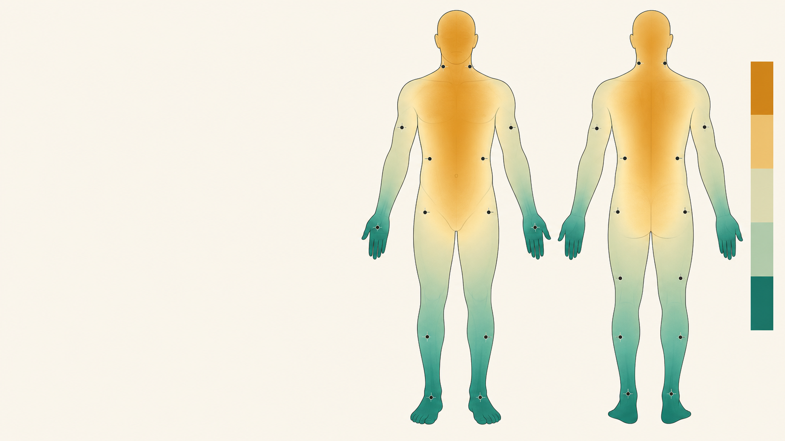
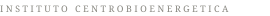

Webinar para profesionales de la salud
El cuerpo eléctrico
Cómo las señales bioeléctricas participan en la adaptación, la reparación y la organización de los tejidos.
La pregunta que abre el webinar
¿Y si parte de la enfermedad fuera una adaptación que quedó activa?
El problema no siempre es que el cuerpo no responda. A veces responde, pero ya no consigue modificar o terminar esa respuesta.
02